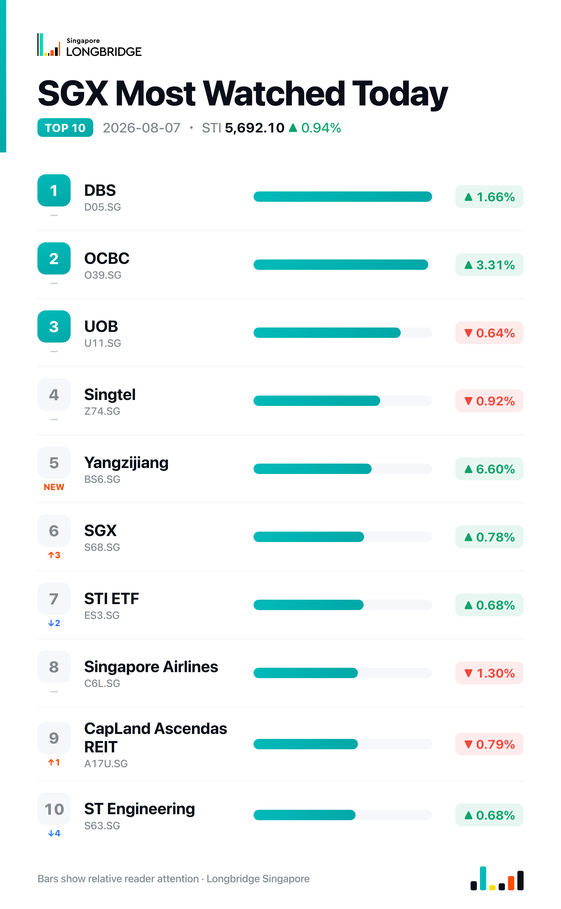

STI Adds 0.94% to 5,692.10 as OCBC, DBS Post Record Earnings; CapitaLand Investment Lags
The Straits Times Index closed at 5,692.10 on Friday, up 53.11 points, or 0.94%, after trading between 5,644.56 and 5,700.07 during the session. The advance was uneven: OCBC and DBS both posted record first-half earnings and led the index higher, even as 18 of the benchmark's 30 constituents closed lower against 11 advancers and one unchanged.
Friday marked the peak of the local bank earnings season. OCBC's first-half net profit rose 13% year-on-year to S$4.195 billion, with second-quarter profit alone up 22% to S$2.221 billion and beating expectations, while DBS reported a record quarterly net profit of S$3.08 billion, up 9%. Combined, the two banks' net fee and other income reached a record S$5.72 billion for the quarter. UOB, which also reported this week, slipped 0.64% even as its peers rallied — the latest split in a run of diverging performance among the three banks over recent sessions. Regional markets were mixed, with Singapore's gains standing out against a softer session elsewhere in Asia.
Session Movers
OCBC (O39.SG, +3.31%) advanced after first-half net profit rose 13% to S$4.195 billion, with second-quarter profit up 22% to S$2.221 billion, ahead of expectations. Non-interest income climbed a record 36% to S$3.51 billion, nearly 44% of total revenue, even as net interest margin narrowed 25 basis points to 1.73%; the board declared an interim dividend of S$0.47, up 15%. OCBC now trades at 2.11 times book, near the top of its five-year range, with a consensus Buy rating.
DBS (D05.SG, +1.66%) posted a record second-quarter net profit of S$3.08 billion, up 9%, with total income above S$6 billion, and declared a dividend of S$0.81 per share. Management guided for 2026 total income growth above last year's pace and raised its outlook for non-interest income, while chief executive Tan Su Shan said the bank's AI initiatives are starting to contribute to fee income. DBS trades at 3.03 times book, near the top of its own five-year range; its consensus target price of S$73.09 sits below Friday's close.
Yangzijiang Shipbuilding (BS6.SG, +6.6%) was the session's best performer after first-half net profit rose 28.4% year-on-year to RMB 5.37 billion, with revenue up 36.2% to RMB 17.53 billion and gross margin at 36.2%. Management said delivery slots through 2029 are nearly full and the company is negotiating toward a target of US$4.5 billion in new orders for 2026, though no interim dividend was declared. The stock carries a consensus Buy rating with a target price implying about 10% upside.
CapitaLand Investment (9CI.SG, -2.18%) was the session's weakest constituent, with no fresh company news on Friday. The stock has traded under a cloud since July 23 reports that merger talks between CapitaLand's Singapore arm and Frasers Property had stalled, even as the group pressed ahead with new China ventures, including a RMB 3.15 billion institutional REIT tied to a Shanghai mixed-use project. It carries a consensus Strong Buy rating with a target price implying more than 26% upside.

One point worth noting
For the second straight session, decliners outnumbered advancers on the STI — 18 to 11, with one unchanged — yet the index still gained 0.94%, with the advance concentrated in OCBC, DBS and Yangzijiang Shipbuilding. It is a narrower version of Thursday's pattern, when just eight stocks rose against 20 decliners on a 1.04% gain, underscoring how a small group of large-cap earnings movers has now set the index's direction in back-to-back sessions.
This recap is for informational purposes only and does not constitute investment advice.